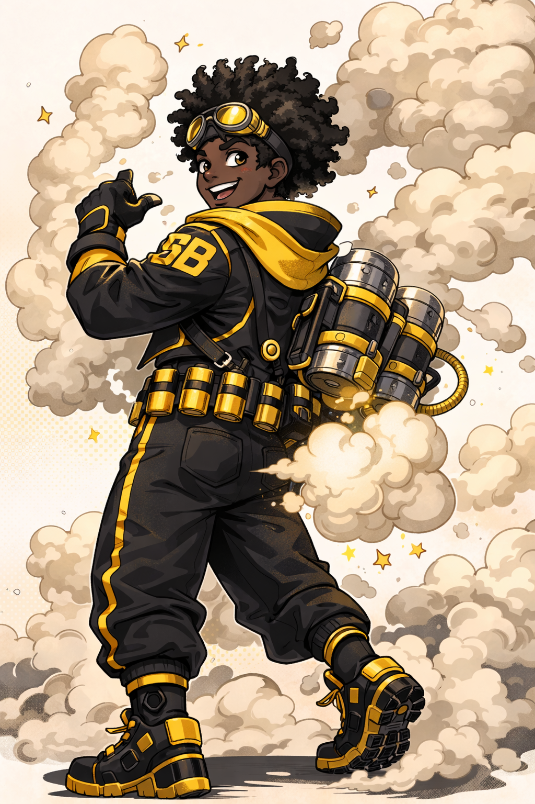
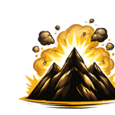
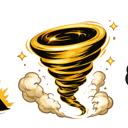
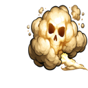
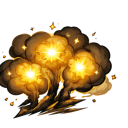

Bio
Smoke Blaster possesses the ability to generate and expel highly pressurized fart clouds from his body, which he can manipulate in density, temperature, and chemical composition. What begins as harmless flatulence can instantly transform into thick smoke screens, explosive gas, or toxic poison zones depending on how he toots.
His stomach acts like a living reactor, breaking down food particles and turning them into volatile gas compounds. With precise control, he can ignite these clouds mid-air, creating controlled detonations or propulsion bursts that enhance his mobility.
While often underestimated due to the nature of his quirk, Smoke Blaster has developed it into a versatile combat and support ability, making him dangerous in both close-quarters and large-scale engagements.
Hero Acommplishments
Signature Moves

Mountain Splitter
Massive compressed fart blasts that can push away enemies.

Cheek Cyclone
This requires a large consumption of beans, but once consumed, gives him the ability to swirl enemies into a literal cyclone.

Backdraft Barrage
Rapid explosive fart bursts that overwhelm opponents, denying them of air and ultimately knocking them out.

Silent But Deadly Field
Invisible gas zone that quietly knocks out enemies, making it one of the moves he uses for stealth. Many wake up, nose sting and no recollection of what happened.
Crack of Dawn
His signature move and one that won him his first trophy at AU academy. With a tight compression of his cheeks, he his able to ignite a fire that morphs into whatever power he desires. he can only use it once a month and it has kickbacks, hemoriodes. He has to be careful using this power.